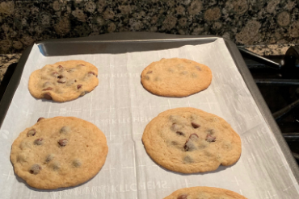

The Essential cookies is the answer to your desert craving that ypu have always wanted, It only takes 30 minutes to make!
Preheat oven to 350 degrees F
Step 2In a large bowl, with a handheld electric mixer set on medium speed, cream butter or margarine and sugars until fluffy, approximetly 2 minuites. Slowly sift in flower and baking soda. Add vanilla and oil and mix until compltletly combined (for a flatter cookie, or if batter is still too dry, add 1 to 2 tablespoons of water).
With wooden spoon,fold in chocolate
Drop by rounded teaspoonfuls on ungreased cookie sheets spaced 2 inches apart and bake for 8 to 10 minutes. Cool on wire racks in pans for 3 minutes remove with spatula and transfer onto wire racks and cool compltletly.